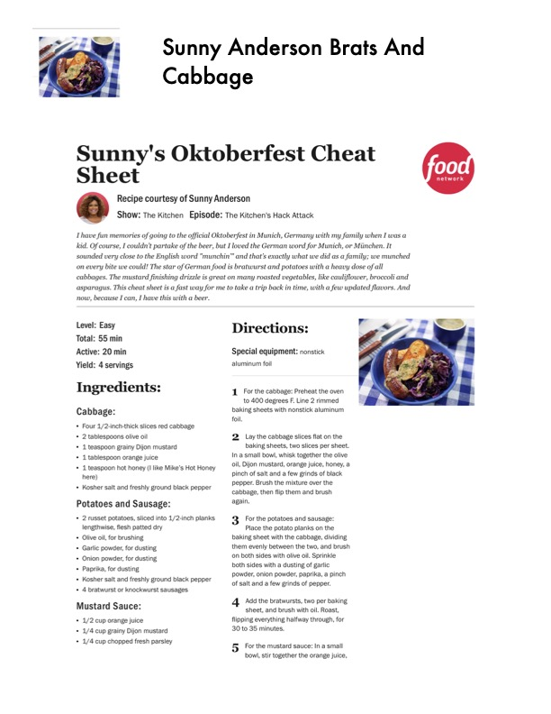

Sunny Anderson Brats And

Original cookbook page 318
Ingredients
- Cabbage:
- + Four 1/2-ineh-thick slices red cabbage
- + 2 tablespoons olive oil
- + 1 teaspoon grainy Dijon mustard
- + 1 tablespoon orange juice
- here)
- + Kosher salt and freshly ground black pepper
- Potatoes and Sausage:
- * 2 russet potatoes, sliced into 1/2-inch planks
- lengthwise, flesh patted dry
- Olive oil, for brushing
- Garlic powder, for dusting
- * Onion powder, for dusting
- Paprika, for dusting
- Kosher salt and freshly ground black pepper
- + 4 bratwurst or knockwurst sausages
- Mustard Sauce:
- + 4/2 cup orange juice
- + 4/4-cup grainy Dijon mustard
- + 1/4 cup chopped fresh parsley
Instructions
- Special equipment: nonstick aluminum foil
- For the cabbage: Preheat the oven to 400 degrees F. Line 2 rimmed baking sheets with nonstick aluminum foil.
- Lay the cabbage slices flat on the baking sheets, two slices per sheet. In a small bowl, whisk together the olive oil, Dijon mustard, orange juice, honey, a pinch of salt and a few grinds of black pepper. Brush the mixture over the cabbage, then flip them and brush again. For the potatoes and sausage: Place the potato planks on the baking sheet with the cabbage, dividing them evenly between the two, and brush on both sides with olive oil. Sprinkle both sides with a dusting of garlic powder, onion powder, paprika, a pinch of salt and a few grinds of pepper. Add the bratwursts, two per baking sheet, and brush with oil. Roast, flipping everything halfway through, for 30 to 35 minutes. For the mustard sauce: In a small bowl, stir together the orange juice,
Recipe #318 from collection